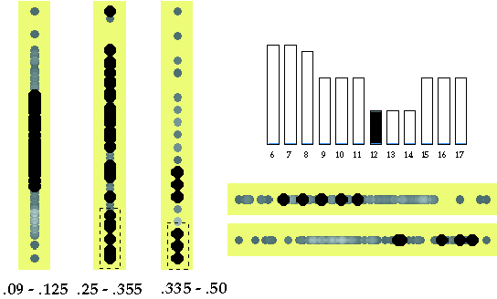
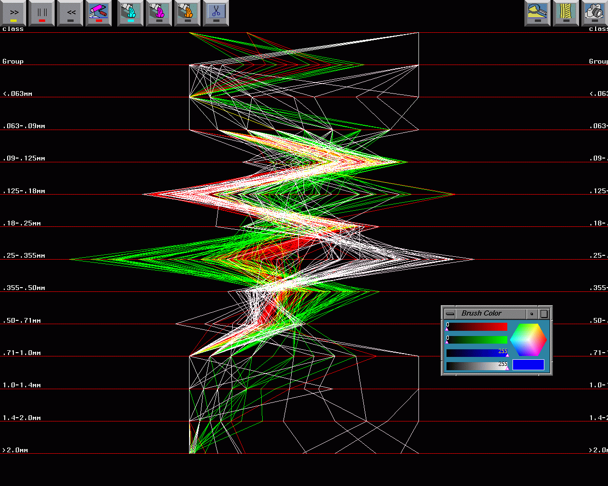

Visual Clustering and Classification:
The Oronsay Particle Size Data Set Revisted
- Technical Report -


By
Adalbert F. X. Wilhelm
Edward J. Wegman
and
Jürgen Symanzik
A
(Unix) compressed postscript version (2.7MB - extends to 65.4MB) and a
pdf version (648KB)
of the text are available.
All the figures from the text are available as GIF files below.
Legends for Figures
-
Figure 1:
An excerpt from a map of the Oronsay island, Inner Hebrides.
It shows the locations
of the two archeological sites labeled Caisteal nan Gillean I
and Cnoc Coig and the four transects TG, CC, ECC, and TUS
where ``modern'' sand samples have been collected.
Reprinted with permission from Fieller et al. (1987).
-
Figure 2(a) and
Figure 2(b):
(a) Scatterplot of summed up weights (vertical) versus
group (horizontal). While most weights scatter around 60g,
values around 70g have been observed for most samples from groups
1 and 22. Group 5 has the smallest sum (51.8g) marked with a
``filled circle'' but also the largest sum (82.4g) marked with a
``filled box''.
(b) A parallel coordinate plot of group 5 reveals that the ``filled circle''
sample has an unusual small value for variable 9, i. e., particle size
[0.125, 0.18) mm, but it also has higher values for
variables 1 and 7. The ``filled box'' sample has a shape that matches the
shape of the remaining samples of group 5.
-
Figure 3(a) and
Figure 3(b):
(a) A dotplot of group for the 149 samples from known sampling
locations. Within each of the groups 6 to 20 two training samples have
been selected. The ``+'' symbols for all observations in groups 18 to 20
have been obtained through linked brushing in (b) a projection
of the grand tour. Here, two clusters are clearly distinguishable
that separate Caisteal nan Gillean samples (the ``+'' samples) from Cnoc Coig samples.
-
Figure 4(a),
Figure 4(b),
Figure 4(c), and
Figure 4(d):
(a) When considering only the Cnoc Coig samples (groups 6 to 17),
a dotplot reveals that the cluster brushed with a ``+'' symbol
in (b) a projection of the grand tour contains mid beach (group 15)
and upper beach (group 17) samples. (c) A dotplot of the final
clustering of the Cnoc Coig samples shows the correct classification
of dune samples (groups 8, 12 to 14) and the
misclassification of two entire groups of upper beach samples
(groups 7 and 11) and 1 mid beach sample (from group 10)
based on (d) a projection of the grand tour where a
homogeneous group of points has been marked with an ``×''
symbol, assuming these are all dune samples.
This projection also shows how the ``+'' cluster
brushed in (b) separates into two subclusters.
-
Figure 5(a),
Figure 5(b),
Figure 5(c),
Figure 5(d), and
Figure 5(e):
(a) When considering only the Caisteal nan Gillean samples (groups 18 to 20),
a dotplot reveals that the cluster brushed with a ``filled circle''
symbol in (b) a projection of the grand tour contains all lower
beach samples (group 18).
(c) A dotplot showing how the dune samples (group 20)
brushed with a ``open circle'' symbol can be
separated from upper beach samples (group 19) based on (d)
another projection of the grand tour. The ``filled box'' sample
is not identified as a dune sample even though it originates from
group 20. (e) Even though this projection of the grand tour
shows an instance of a separation among the three groups, it cannot
be considered as useful for clustering in an interactive
environment since the ``+'' and ``open circle'' symbols moved
in the same direction and the ``filled box'' moved outside
the area of ``open circle'' symbols almost immediately.
-
Figure 6(a) and
Figure 6(b):
(a) When considering only groups 6 to 17 for the reevaluation
of Figure 4c in Fieller et al. (1984) a dotplot shows the symbols used
to mark the 12 known groups at the Cnoc Coig site. (b) A projection
showing a local optimum based on the projection-pursuit-guided
grand tour and a manually drawn dividing line shows a separation
between beach samples (left of the line) and dune samples
(right of the line). However, upper beach locations from the
CC transect (group 7) and from the TG transect (group 11) also
fall right of the line.
-
Figure 7(a),
Figure 7(b), and
Figure 7(c):
(a) A dotplot shows the symbols used to mark the 5 groups from
the Caisteal nan Gillean site used for the reevaluation of Figure 4d in
Fieller et al. (1984). Projection (b) shows a circular arrangement
and projection (c) shows a linear arrangement, each obtained
as a local optimum based on the projection-pursuit-guided
grand tour. These and many similar projections
show more differences than similarities between
archaeological samples (groups 5 and 21) and modern samples (groups
18 to 20).
-
Figure 8(a),
Figure 8(b), and
Figure 8(c):
(a) A projection that separates between sites
(the big ``+'' and ``×''
symbols are Cnoc Coig samples, the small ``+'' and ``×'' symbols
are Caisteal nan Gillean samples) and sands within sites (the ``+'' symbols are
beach samples and the ``×'' symbols are ``dune-like'' samples).
The small ``.'' symbols represent the archaeological samples.
Separation lines have been added manually.
(b) A dotplot shows the symbols used for all 226 samples.
(c) When adding the symbols used in (b) to the projection in (a),
we see that archaeological Caisteal nan Gillean samples fall close to modern
Caisteal nan Gillean samples (beach and dune). Archaeological Cnoc Coig samples
are clearly distinguishable from modern Cnoc Coig beach.
Sands above CC Midden (group 1) and Sands below CC Midden (groups 2 and 3)
are close to modern Cnoc Coig dunes.
CC Shell Midden (group 22) and CC Soil Pit (group 4)
have some overlap with the other
archaeological Cnoc Coig samples but they have very little in common
with modern Cnoc Coig dunes.
-
Figure 9:
Original parallel coordinate plot of Oronsay Cnoc Coig and Caisteal nan Gillean data.
The Cnoc Coig data is in black, the Caisteal nan Gillean data in gray (red). Data from the two
sources strongly separate with the Cnoc Coig sand generally being much finer than
the sand from the Caisteal nan Gillean site.
-
Figure 10:
Parallel coordinate plot of Cnoc Coig data after completing the
BRUSH-TOUR strategy. The data are divided into six clusters with red and
magenta being ``dune-like'' sand. In the present image, all points are
rendered in grayscale. The reader is referred to the webpage for full
color illustrations.}
-
Figure 11:
Sequence of decompositions for Cnoc Coig sand data. Red and magenta
are basically the ``dune-like'' sands, other colors represent the
``beach-like'' sands. The strongest splits tend to occur early in the
BRUSH-TOUR strategy. Thus, the ``dune-beach'' split was the most evident.
-
Figure 12:
Parallel coordinate display of Cnoc Coig known (training) data and Cnoc Coig
groups 2 and 3 after partial grand tour. The group 2 and 3 data are given
in white. The group 2 and 3 data generally follow the red-magenta
``dune-like'' sand data. However the group 2 and 3 data clearly depart
significantly in certain dimensions, notably along the .50-.71 mm axis in
this illustration.
-
Figure 13:
Scatterplot matrix of Cnoc Coig known (training) data against Cnoc Coig group
4 (unknown) data. The group 4 data are shown in white while the known Cnoc Coig
data are shown in colors. The scatterplot diagram shown in the upper
right-hand side of this illustration shows that the group 4 data are
essentially orthogonal to all of the training data. Group 4 is definitely
a different cluster, although if forced to characterize group 4 data, they
would be closest to the ``dune-like'' sand data.
-
Figure 14:
Simplified parallel coordinate display of all Cnoc Coig data after
partial grand tour. ``Dune-like'' sands are shown in red, ``beach-like''
sands
are shown in green, and ``unknown'' sands shown in white. The unknown class
is distinct from both ``dune-like'' sand and ``beach-like'' sand. This is
particularly clear in the .25-.355 axis.
-
Figure 15:
Simplified scatterplot matrix of all Cnoc Coig data after partial
grand tour. The coloring is as in Figure 14. A density plot
of the
circled scatterplot is shown in the upper right. In the density plot, the
tallest bump/mode corresponds to the red ``dune-like'' sand, the two smaller
bump/modes on the right correspond to the green ``beach-like''
sand, and the smaller bump/mode on the left corresponds to the white
``unknown'' sand. The ``unknown'' sand is most like the ``dune-like'' sand, but
still rather distinct.
-
Figure 16:
Dotplots of all variables for 149 known samples.
Bright colors represent many points and dark colors only a few
points. Measurements on the extreme particle sizes >2.0mm, 1.4 - 2.0mm,
1.0 - 1.4mm, .71 - 1.4mm, .063 - .09mm, and <.06mm are highly quantized.
Large gaps in the data are apparent for variables .355 - .50mm and .25 - .355mm.
-
Figure 17:
Boxplots for all 149 training samples. Variables >2.0mm, 1.4 - 2.0mm,
1.0 - 1.4mm, \ldots , .063 - .09mm, and <.06mm are displayed from
left to right. Only two variables, .18 - .25mm and
.09 - .125mm, show no outliers. These two distributions are also only
slightly skewed. Data on all the other variables is skewed to the right,
but data on particle size .125 - .18mm is skewed to the left.
-
Figure 18:
No classification in dotplots between dune
and beach for the 149 known samples for both locations when selecting beach
(top row)
and dune (bottom row). Due to overplotting it appears that the same
points have been selected more than once. In reality,
a visible point sometimes represents a larger number of
samples and it is already highlighted if just one of these
samples is selected.
-
Figure 19:
Clear classification between sites Cnoc Coig (top row) and Caisteal nan Gillean (bottom
row)
when selecting clusters of variable `[0.25, 0.355) mm'. Also the
variables `[0.355, 0.5) mm', `[0.125, 0.18) mm', and
`[0.09, 0.125) mm' allow a clear separation between Cnoc Coig and Caisteal nan Gillean.
-
Figure 20:
We apply the classification rule of training data to the entire
data set of 226 samples. (a) Selecting the right-hand cluster in variable
.25 - .355mm highlights all training samples at Caisteal nan Gillean, one sample of test
group 5 and also all but
one of group 21. (b) However, 16 points
fall between the previously established clusters. Those points are
classified by using the classification rule based on the training data
for variable .355 - .50mm. (c) The resulting classification
is correct for groups 18 to 21, but misses two samples in group 5 and
misclassifies five samples in group 4.
-
Figure 21:
Final classification tree for separating all 226 sand samples by site.
-
Figure 22:
(a) Outliers for particle size `[1.4, 2.0)mm' fall mainly in groups 15 and
18. (b) Enlarging the selected group to all samples with values
greater than 0.1g for variable 1.4 - 2.0mm highlights all but one
sample of group 6, all samples of groups 15 and 18, and one
sample of group 10 (misclassified).
-
Figure 23:
The dune samples at Cnoc Coig split into two groups for variables
.18 - .25mm and .125 - .18mm. Group 12 (marked red, i.e. bigger
light dots) is
different from groups 8, 13, and 14 (all marked blue, i.e. bigger
dark dots). From the
position of the two groups it can be concluded that dune sands of
group 12 are much finer since these samples have heavier weights from
the finer sieves and lighter weights from the coarser sieves.
-
Figure 24:
The distribution for particle size `[0.09, 0.125)mm' seems to be a
mixture of four individual distributions: one for the Caisteal nan Gillean
samples, one for groups 7, 8, 11, 13, and 14 (in a), one for groups
6, 10, 12, and 17 (in b), and one for groups 9, 15, and 16 (in c).
-
Figure 25:
Individual separation of group 12 by sequentially
selecting subclusters (the dashed areas) in the respective highlighting of particle sizes
`[0.09, 0.125)mm', `[0.25, 0.355)mm', and `[0.335, 0.50)mm'. No further
clustering can be found in the dotplots of the other variables
.125 - .18mm and .18 - .25mm (right under bar chart for group).
-
Figure 26:
Individual separation of groups 9, 15 and 16 by sequentially
selecting subclusters in the respective highlighting of particle sizes
`[0.09, 0.125)mm', `[0.125, 0.18)mm', and `[0.335, 0.50)mm'.
-
Figure 27:
Histograms of the root variable `particle sizes [0.09, 0.125)mm' for
modern samples and entire data set.
-
Figure 28:
Classification of 30 known sand samples at Caisteal nan Gillean.
-
Figure 29:
Classification tree based on 30 known samples for separating sand types at Caisteal nan Gillean.
-
Figure 30:
Classification of the test data at Caisteal nan Gillean. Groups 4 and 5 build a
separate cluster that would be classified as neither dune nor beach.
Half of the samples in group 21 fall into the beach and the dune
clusters.
Last Update October 30, 1998